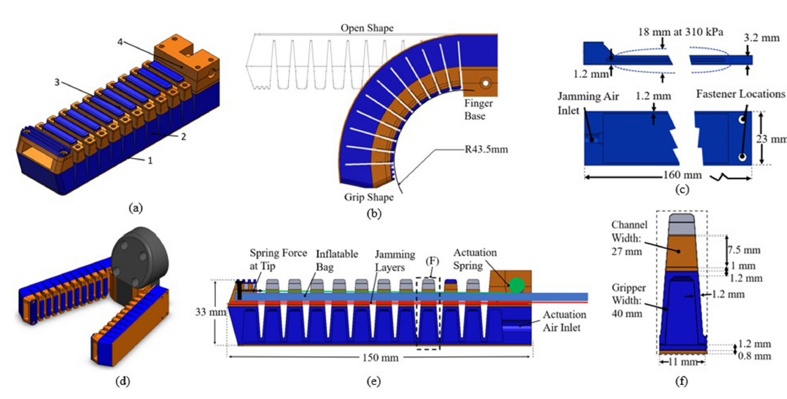
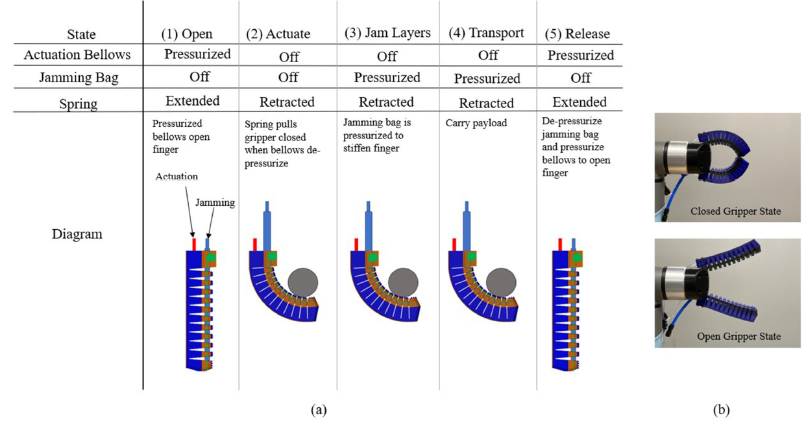
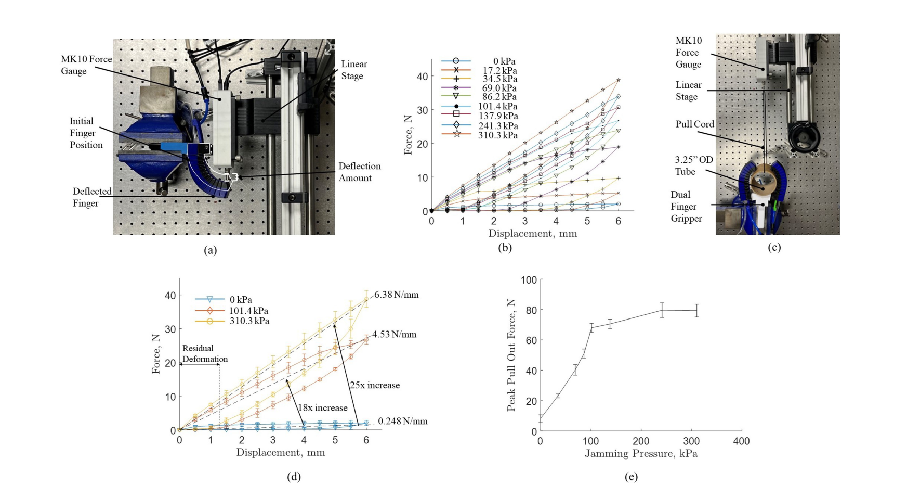
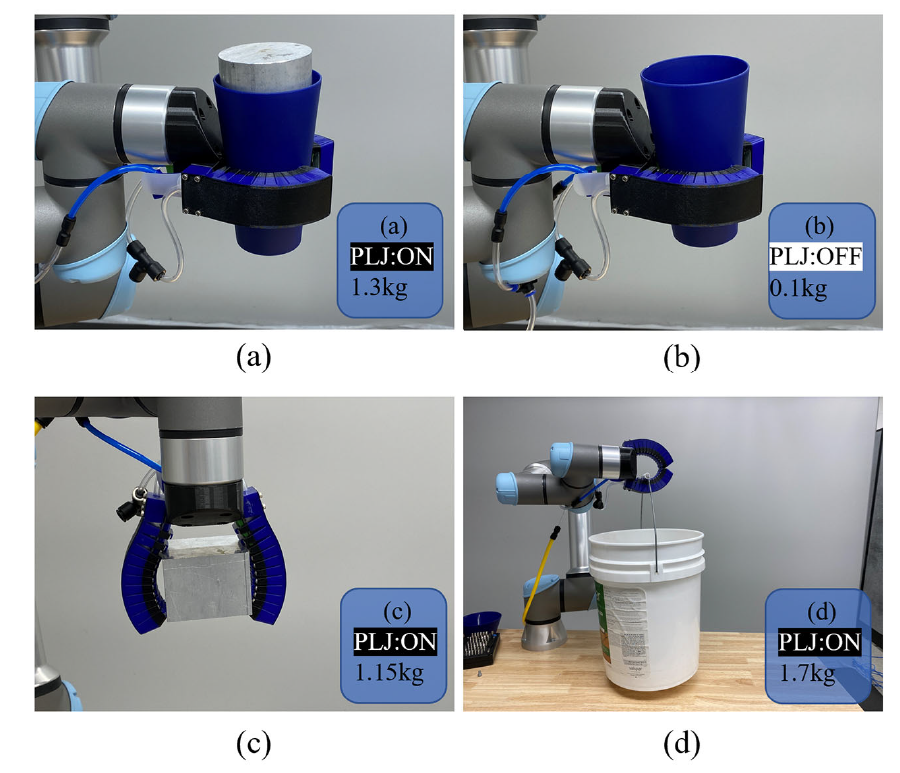

A 3D Printed Soft Robotic Gripper With a Variable Stiffness Enabled by a Novel Positive Pressure Layer Jamming Technology
IEEE Robotics and Automation Letters, Vol. 7, No. 2, pp. 5477–5482, April 2022




Abstract
In this research, a soft robotic gripper with a variable stiffness enabled by a novel positive pressure layer jamming technology was developed and fabricated in two materials using customized additive manufacturing. A novel positive pressure layer jamming technology was developed for tuning stiffness of the gripper. Positive pressure layer jamming has a higher performance potential than conventional vacuum layer jamming since a higher pressure can be applied, approximately 1.6× higher in terms of payload capacity. Two different thermoplastics materials are printed together to form a relatively hard backbone and a relatively soft airtight actuation bellows. The implementation of positive layer jamming will be described, along with the additive manufacturing techniques used to produce the gripper and the test results of the final design. Experimental tests show that this soft gripper was able to vary its stiffness about 25× fold with the positive layer jamming. This work demonstrates that the positive pressure jamming offers a novel method for varying soft robot stiffness with higher payload capacity than the conventional vacuum based layer jamming technology.
Index Terms: Additive manufacturing, grasping, grippers and other end-effectors, soft robot applications, soft robot materials and design.
Presentation Video
Results
Stiffness and pull-out force tests were conducted with the single-finger configuration on a rigid base, deflected 6 mm using a force sensor on a linear stage. Each pressure level was repeated five times. Pull-out force tests used the dual-finger gripper grasping a cardboard tube, traversed by a force gauge until the tube was removed. Actuation timing and tip-position repeatability were measured with the finger cycled open and closed at 310.3 kPa.
| Metric | Value |
|---|---|
| Stiffness at 0 kPa (no jamming) | 0.248 N/mm |
| Stiffness at 310.3 kPa (max positive pressure) | 6.38 N/mm |
| Stiffness increase (positive pressure LJ) | ∼25× |
| Payload capacity advantage vs. vacuum LJ | ∼1.6× |
| Peak pull-out force (saturation at 241.3 kPa) | ∼80 N average |
| Pull-out force increase vs. vacuum LJ equivalent | 2.4× (vs. commercial mGrip™) |
| Average gripper open time | 0.24 s |
| Average gripper close time | 0.29 s |
| Gripper tip position repeatability (std) | 0.13 mm |
| Maximum demonstrated payload | 1.7 kg (bucket) |
The positive pressure layer jamming design consistently outperformed vacuum-equivalent configurations: the 25× stiffness increase was measured across all tested pressures without slip below 310.3 kPa, and the pull-out force saturated in Phase 1 (no-slip regime) at 241.3 kPa with an average force of 80 N—a 1.6× improvement over the theoretical vacuum equivalent and a 2.4× improvement over a comparable commercial gripper. Multi-material FDM printing (PETG backbone + TPU bellows) enabled tight internal channels and a strain-limiting layer that would otherwise require a separate assembly step in silicone-molded designs.
BibTeX
@article{Crowley2022-LJ-Gripper,
title = {A 3{D} printed soft robotic gripper with a variable stiffness enabled by a novel positive pressure layer jamming technology},
author = {Crowley, George B. and Zeng, Xianpai and Su, Hai-Jun},
journal = {IEEE Robotics and Automation Letters},
volume = {7},
number = {2},
pages = {5477--5482},
year = {2022},
doi = {10.1109/LRA.2022.3157448},
url = {https://doi.org/10.1109/LRA.2022.3157448}
}